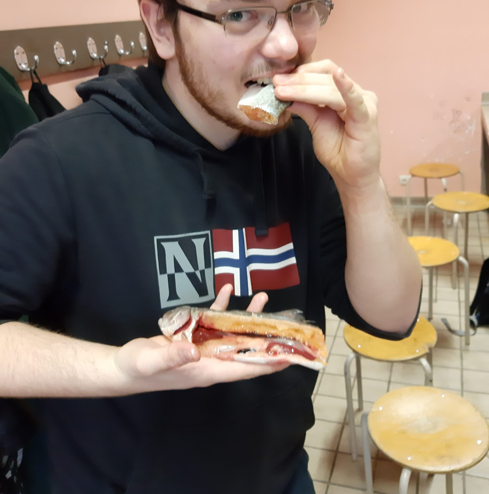
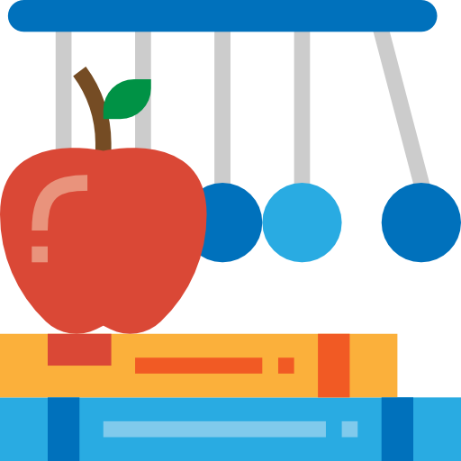
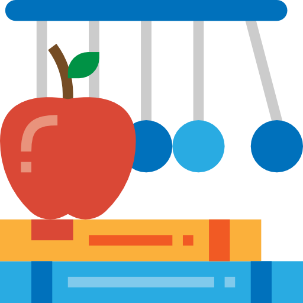

Présentation Services proposés Méthodologie Objectifs Recommendations Tarifications Fiche de contact
PRÉSENTATION

Je m'appelle Thomas et je suis actuellement étudiant à l'université de Namur en classe préparatoire à l'examen d'entrée en faculté de médecine.
Cela fait déjà deux ans que je donne régulièrement des cours particuliers ainsi que des séances d'aide aux devoirs dans le primaire et secondaire.
Enrichi de l'expérience acquise avec plus de 15 élèves différents, j'ai appréhendé plusieurs méthodes à adopter en fonction de l'individu à qui j'ai affaire.
SERVICES PROPOSÉS
Ici, vous retrouverez toutes les matières que j'enseigne en cours particuliers de la primaire jusqu'au second degré de l'enseignement secondaire. L'aide aux devoirs couvrent toutes les matières.
Des cours en face à face et en groupe de deux à quatre élèves sont organisés deux à trois fois par semaine au minimum.
 

MÉTHODOLOGIE
Enseignement basé sur une méthodologie de pédagogie active. Maîtrise de la théorie et installation de compétences qui vous guident lors de votre transfert de savoir. Je suis aptes à vous permettre de réaliser une vraie audite de formation. Je vous aiderai à transformer vos ambitions en objectifs de formation et à tracer les modalités de conduites à adopter.
OBJECTIFS
- Amener l’apprenant à découvrir son mode de fonctionnement.
- Déterminer les causes de l’échec - Évaluer les besoins en terme de soutien scolaire.
- Réaliser son planning d’étude en respectant ses temps d’apprentissage.
- Définir les points à travailler et développer ses points forts.
- Gérer l’impasse face à la situation scolaire.
RECOMMENDATIONS
- Lucas, 17 ans
- Stéphane, 18 ans
- Jordan, père d’Éloïse (9 ans) et de Mathieu (13 ans)
- Meghara, 15 ans
Bon professeur qui prend le temps d'expliquer, je recommande.
Incroyable! Clair, rapide et efficace! Rien à redire. Il mérite le titre de Superprof!
Fiable et compétent, il parvient à cibler les lacunes de ses élèves afin d'y remédier. Les notes de mes enfants de 9 ans et 13 ans se sont nettement améliorées.
Thomas a su me faire comprendre les mathématiques comme personne. C'est un professeur attentif aux besoins de ses élèves, il est décidément doté d'un don pour détecter leurs lacunes et combler ces dernières. Selon moi, c'est un excellent pédagogue. Il a une façon d'approcher les différentes de celle que l'on peut observer habituellement, et facilite ainsi incroyablement l'apprentissage de celle-ci. j'ai énormément appris de Thomas, c'est pourquoi je le recommande sur cette plateforme.
TARIFICATIONS
Tarifs actuels :| Cours particuliers | Aide aux devoirs |
|---|---|
| 15,00€ / heure | 12,00€ / heure |
| 0 à 5km | 5 à 10km | 10 à 20km |
|---|---|---|
| Aucuns frais | 2,50€ | 5,00€ |
Tout payement s'effectuera sur le compte ci-contre: BE20 0018 1900 7856.
FICHE DE CONTACT
téléphone : 0496/88.03.22
adresse mail : filogranathomas@gmail.com
Les cours particuliers et aides aux devoirs sont donnés au domicile de l'élève dans un rayon maximum de 20km autour de l'adresse ci-contre, soit à mon domicile, soit en visioconférence.
N'hésitez vraiment pas à me contacter afin d'obtenir plus d'informations !